QR-Rechnung raus. Zahlung zugeordnet.
Rechnungen mit Swiss QR-Zahlteil, auch in EUR. Zahlungseingänge werden über die Referenz erkannt, Mahnungen in drei Stufen.
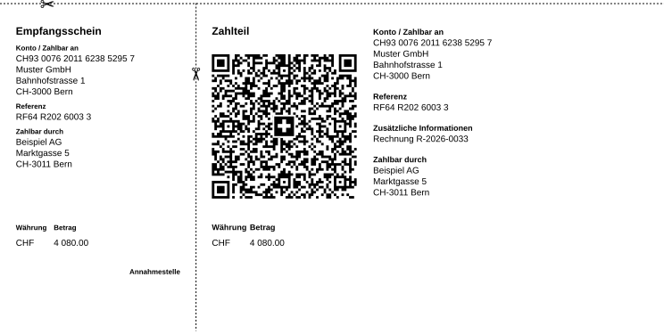
aeradex ist eine offene Schweizer Buchhaltung, gebaut für die Zusammenarbeit mit KI. Dein Agent bereitet vor, die Engine rechnet, du gibst frei. Belege, Rechnungen, Bank, MWST und Lohn an einem Ort.
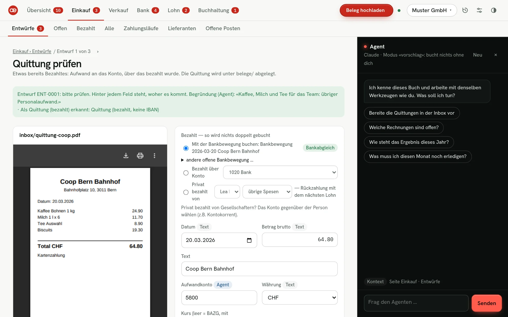
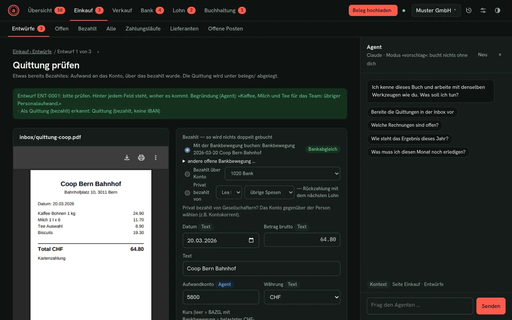
01Arbeitsteilung
Sprachmodelle sind gut darin, einen Beleg zu verstehen. Bei Zahlen sollen sie nicht raten. aeradex trennt deshalb sauber: Jede Rolle macht, was sie am besten kann.
Er liest Quittungen und Rechnungen, erkennt Lieferanten, wählt Konten und schreibt eine Begründung dazu. Du sprichst mit ihm wie mit einer Fachperson.
«Welche Rechnungen sind über 30 Tage offen?»
Salden, Bilanz, MWST, Löhne und QR-Referenzen berechnet deterministischer Code, auf den Rappen. Jede Änderung muss alle Prüfregeln bestehen, sonst wird sie abgelehnt.
Soll = Haben · Periode gesperrt · Fingerprint ok
Was der Agent vorbereitet, landet zuerst bei dir: Belege als Entwürfe, freie Buchungen als Vorschläge. Du siehst Beleg und Buchung nebeneinander, mit der Begründung des Agenten, und gibst frei.
Freigeben & nächster
02Produkt
Im Browser arbeitest du wie in jeder modernen Buchhaltung. Der Agent sitzt rechts daneben und arbeitet mit denselben Werkzeugen wie du. Was er tut, erscheint sofort auf deinem Bildschirm.
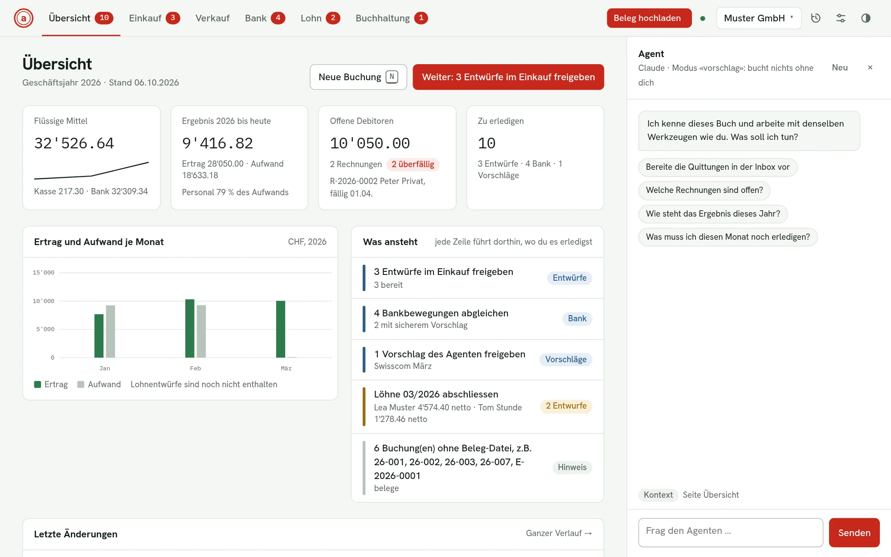
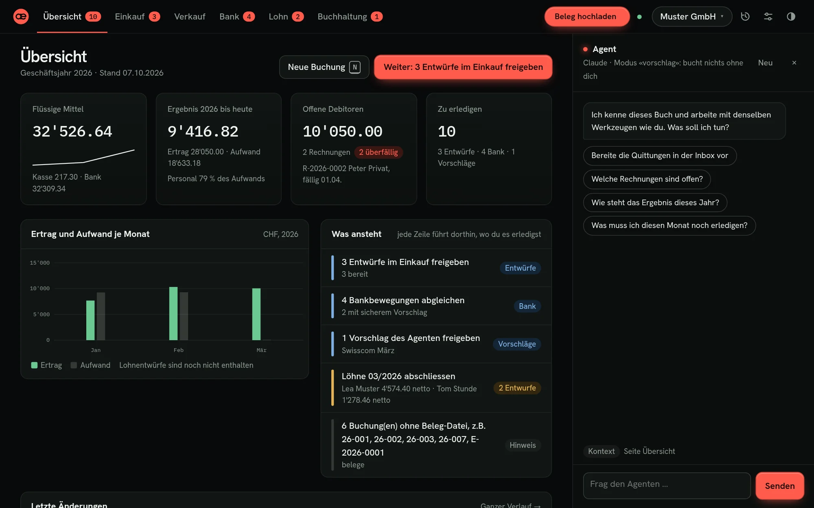
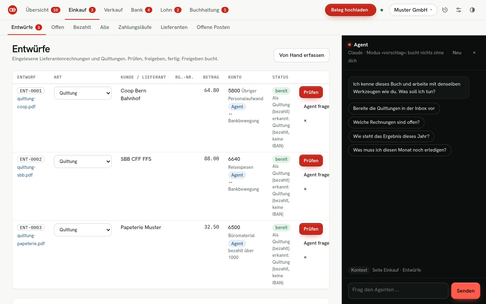
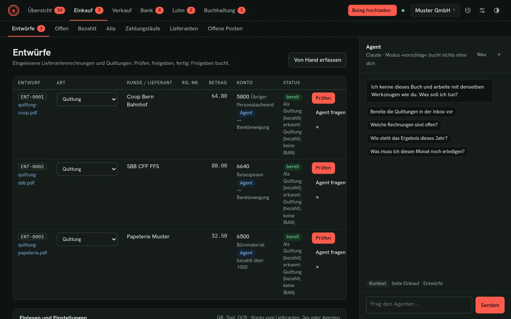
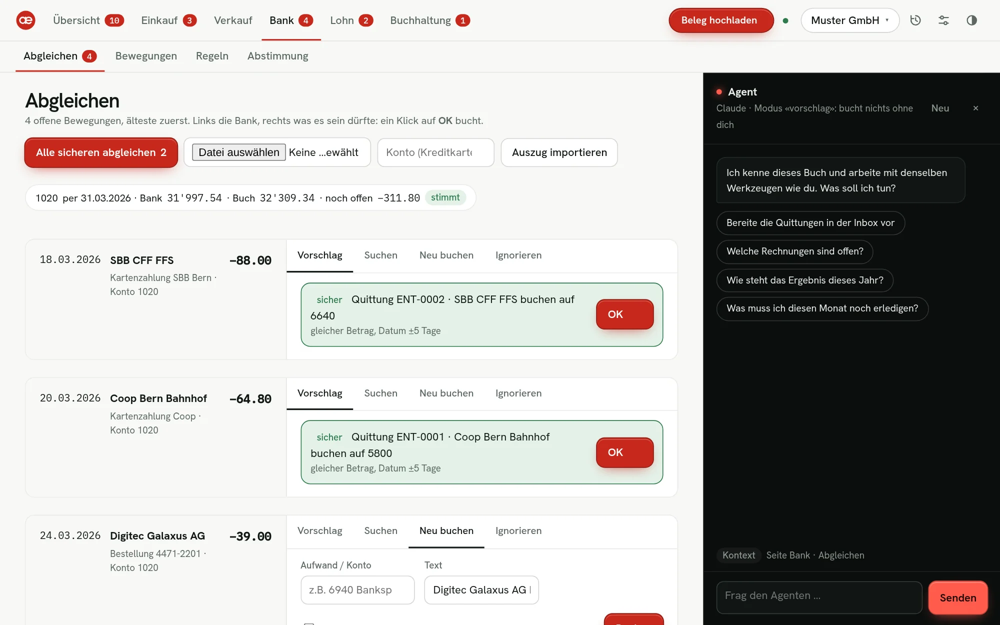
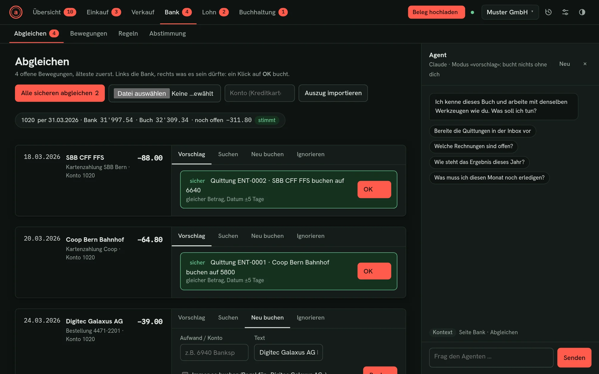
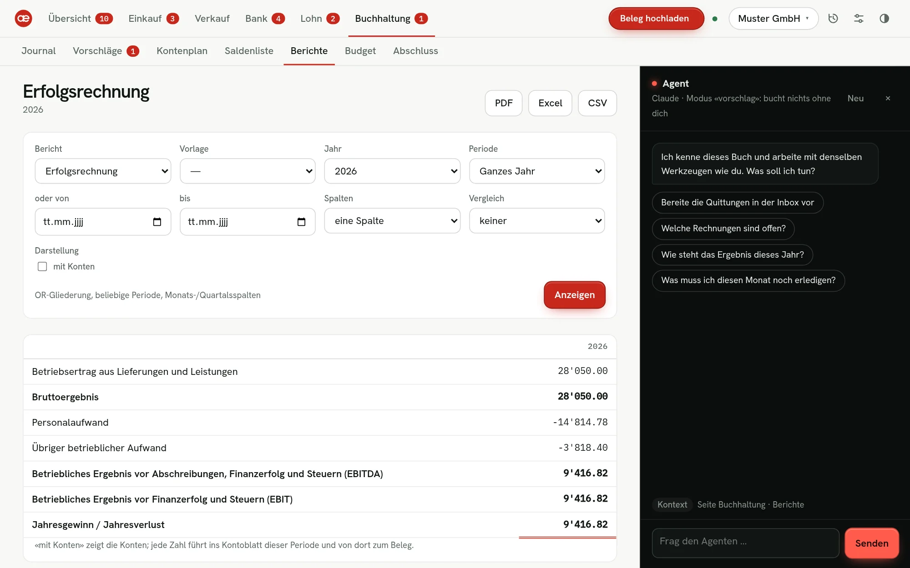
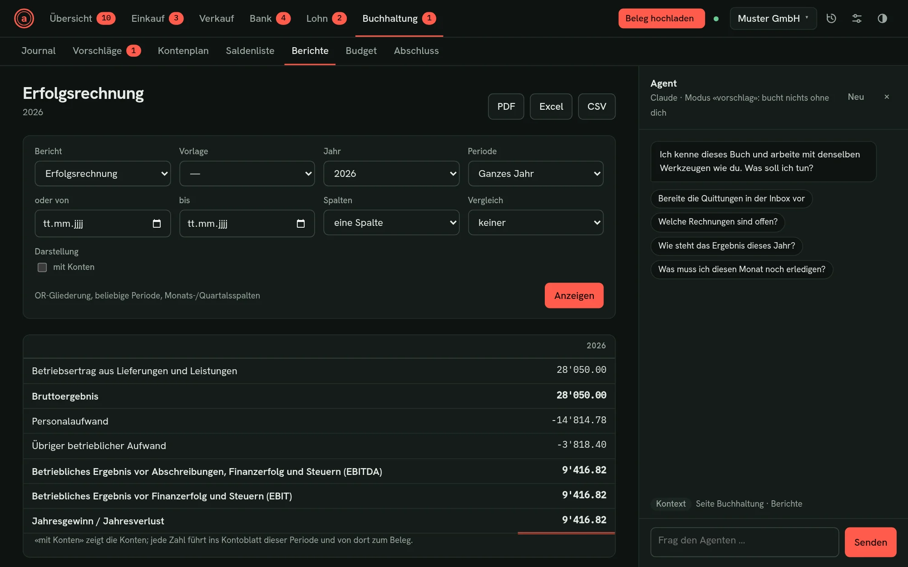
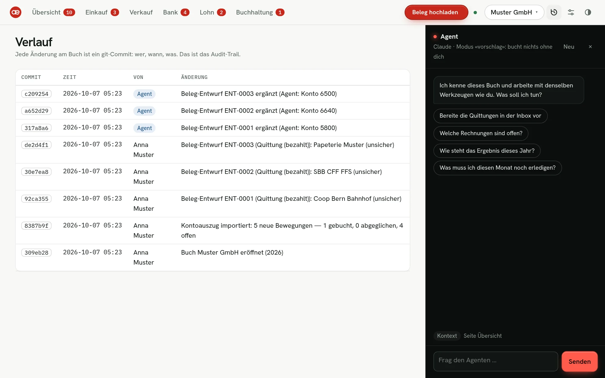
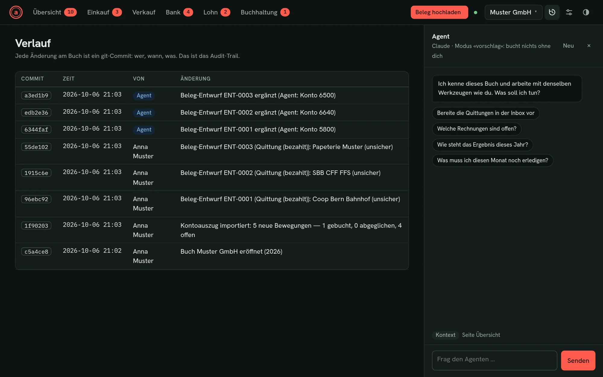
Übersicht. Geld auf dem Konto, Ergebnis, offene Rechnungen und «Was ansteht». Jede Zeile führt dorthin, wo du es erledigst.
03Open Source
Andere Buchhaltungen verstecken deine Zahlen in einer Datenbank. Bei aeradex liegt jede Buchung als lesbare Datei in einem Ordner, den du besitzt. Jede Änderung ist ein Eintrag im Verlauf. Das ist auch der Grund, warum ein Agent hier so gut arbeiten kann.
# Journal Januar 2026 | Datum | Beleg | Text | Soll | Haben | Betrag | FW | Kurs | MWST | Quelle | | ----- | ----- | ---- | ---- | ----- | -----: | --- | ---- | ---- | ------ | | 2026-01-05 | 26-001 | Büromaterial Papeterie | 6500 | 1020 | 45.80 | | | | | | 2026-01-20 | R-2026-0003 | Rechnung R-2026-0003 – Beispiel AG | 1100 | 3400 | 7680.00 | | | | rechnung:R-2026-0003 | | 2026-01-31 | 26-002 | Miete Büro Januar | 6000 | 1020 | 1800.00 | | | | |
317a8a6 aeradex: Beleg-Entwurf ENT-0001 ergänzt (Agent: Konto 5800) aeradex Agent (claude-code) 92ca355 aeradex: Beleg-Entwurf ENT-0001 (Quittung (bezahlt)): Coop Bern Bahnhof Anna Muster 8387b9f aeradex: Kontoauszug importiert: 5 neue Bewegungen Anna Muster
Journal, Kunden, Rechnungen und Löhne als Markdown und YAML. Lesbar in jedem Editor, auch in zwanzig Jahren und auch ohne aeradex.
Jede Änderung ist ein Commit, mit Namen von Mensch oder Agent. Ein ungültiges Buch lässt sich gar nicht erst speichern.
Gesperrte Perioden sind gehasht, ausgestellte Rechnungen und Lohnabrechnungen tragen einen Fingerprint. Nachträgliche Änderungen fallen auf (GeBüV).
Quellcode offen, selbst betreibbar, ohne Abo. Was nicht in den Kern gehört, kommt als Plugin, etwa Revolut, Offerten mit Zeiterfassung oder Anlagen.
04Für die Schweiz
Kontenrahmen KMU, OR-Gliederung, QR-Rechnung, ESTV-Ziffern, Sozialversicherungen. Die Fachlogik stammt aus einer produktiv genutzten Buchhaltung und stimmt gegen echte Zahlen auf den Rappen.
Rechnungen mit Swiss QR-Zahlteil, auch in EUR. Zahlungseingänge werden über die Referenz erkannt, Mahnungen in drei Stufen.

Pro Bewegung ein Vorschlag: Kreditor, Debitor, Quittung oder Regel.
camt.053 · CSV · Excel · pain.001
Effektiv oder Saldosteuersatz, Bezugsteuer, Export als eMWST-Datei für das ESTV-Portal.
AHV/IV/EO, ALV, UVG, KTG, BVG, FAK und Quellensteuer nach ESTV-Tarifen. Lohnausweis Formular 11.
Jahresrechnung, Journal, Saldenliste und gestempelte Belege als ZIP, mit Lückenverzeichnis und SHA-256-Manifest.
Bilanz und Erfolgsrechnung nach OR 959a/b für jede Periode, mit Vorjahr, Budget und Geldfluss. Von der Zahl bis zum Beleg.
05Kontrolle
Ein Agent ist nur so gut wie die Leitplanken, in denen er arbeitet. Bei aeradex sind sie Teil des Systems, nicht ein Versprechen im Prompt.
Für KI-Funktionen nutzt du deinen eigenen Zugang: Claude Code, Codex, opencode oder die Claude API. Je nach Anbieter fallen Kosten an und Buchhaltungsdaten werden an dessen Dienst übermittelt. Ohne Agent funktioniert aeradex vollständig.
Freie Buchungen des Agenten landen als Vorschlag bei dir. Rechnungen und Lohnläufe darf er erstellen, weil sie aus deinen Angaben deterministisch entstehen.
Für eingespielte Abläufe darf der Agent selbst buchen. Alle Prüfregeln gelten weiterhin.
06Loslegen
aeradex läuft auf deinem Rechner oder deinem eigenen Server und wird im Browser bedient. Die Einrichtung braucht heute noch technische Kenntnisse oder jemanden, der sie dir abnimmt.
$ git clone https://github.com/aeradex/aeradex && cd aeradex $ pip install -e ".[ui,mcp,scan]" $ aeradex init ~/buchhaltung/muster --firma "Muster GmbH" $ claude mcp add aeradex -- aeradex --buch ~/buchhaltung/muster mcp
Python 3.11 oder neuer. Codex und opencode werden genauso angebunden. Betrieb auf dem eigenen Server · Plugins schreiben
--jsonNein. Du kannst alles selbst im Browser erledigen: Belege, Rechnungen, Bankabgleich, Lohn und Abschluss. Der Agent ist eine Abkürzung, keine Voraussetzung.
In einem Ordner auf deinem Rechner oder Server, versioniert mit git. Du bist für Betrieb und Backups verantwortlich. Nutzt du einen KI-Agenten, hängt die Verarbeitung der Daten, die er liest, vom gewählten Anbieter ab.
Die Software selbst ist kostenlos und quelloffen. Kosten entstehen höchstens für deinen Server und für den KI-Anbieter, falls du einen Agenten nutzt.
Der Quellcode steht unter der AGPL-3.0. Du kannst ihn einsehen, selbst betreiben und anpassen. Dateiformat, Plugin-Schnittstelle und Werkzeuge für Agenten sind offen dokumentiert.
Lohnmeldungen über ELM (Swissdec) erfordern eine Zertifizierung und sind nicht möglich. Als Vorschau gibt es zudem keine Gewährleistung. Teste die Abläufe zuerst mit einem Testbuch.
aeradex verbindet lat. aera, die einzelnen Posten einer Rechnung, mit index, dem Verzeichnis. Gebaut in der Schweiz, offen für alle, die mitbauen wollen.